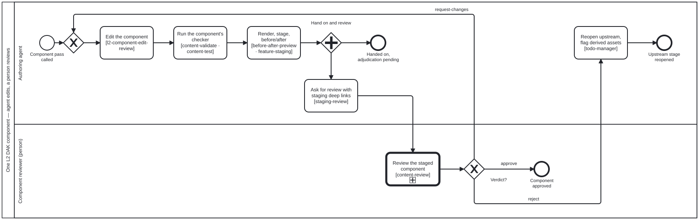

Generated from
smart-base/skills/content/authoring-who-smart-guidelines/l2-component-edit-review.md— do not edit here.
l2-component-edit-review
Skill id:
l2-component-edit-review· Package:authoring-who-smart-guidelines· Process:l2-component-edit-review.bpmn(Process_L2ComponentEditReview), called by every authoring track ofl2-dak-authoring.bpmn
Owner, 2026-10-14: “make sure all L2 agent edit-human review process for DMN and BPMN, glossary/data dictionary, user stories and personas for the DAK are documented as part of subprocess and tools/skills where necessary.”
This skill adds one table and no mechanism. Every step of the subprocess
runs a skill that already exists. Review is cat-harness’s Process_Review.
The verdict is a qa-review/v1 QaReview. The links follow staging-review’s
deep-link rule, and the preview follows before-after-preview. What differs
between components is only which renderer, checker, diff and reviewer a pass
uses, and the table below records that.
The shape: edit, check, render, then fork
edit ─► check ─► render + stage ─┬─► hand on (adjudication: pending) the track continues
└─► ask for review ─► Process_Review ─► verdict
approve ─► done
request-changes ─► edit again
reject ─► reopen upstream, flag derived assets
Adjudication is QA, not a gate (owner, 2026-10-14). The track that called the
subprocess carries on as soon as the component is staged, and nothing waits for
the verdict. But not waiting is not skipping: the call ends only when both
branches have ended, and the DAK is not adjudicated until every component’s
verdict is recorded. These are rules 1 to 4 of
smart-guideline-end-to-end, applied to one
component.
The inputs, per component
The calling activity in l2-dak-authoring.bpmn names the authoring skill. Its
documentation names the rest.
| component (DAK #) | track in Process_L2Dak | authoring skill | checker (Task_Check) | renderer and diff (Task_RenderStage) | reviewing role | the reviewer judges |
|---|---|---|---|---|---|---|
| Generic personas (2), user scenarios (3) | Task_Personas | l2-dak-authoring | Each persona maps to a swimlane and each lane to a persona (dak-swimlanes.ts). Each scenario traces to an L1 recommendation through implementedBy (recommendation-extraction; candidates from l1-recommendation-scenarios.ts). | The persona card (role, goal, setting) and the scenario as a prose diff: the word or inline DiffRenderer (before-after-preview). | Clinical SME | Is this who does the work, and is this what they do, as the guideline says? |
| Business processes, BPMN (4) | Task_Bpmn | bpmn-authoring | bpmn-js imports it with no warnings and every shape has diagram interchange. Lanes map to personas (dak-swimlanes.ts). Reachability (artefact-reachability). | The diagram drawn by render:bpmn, before and after, with a visual-diff picture and its changed-pixel count. | Clinical SME | Does the flow match practice, and does each lane name a persona? |
| Decision-support logic (6), scheduling logic (7), DMN | Task_Dmn | dmn-authoring | The table loads within the FEEL subset dmn-authoring names. Its decisions are reachable from a gateway (artefact-reachability, audit:reachability). Its test cases run (content-test). | The decision table as HTML (smart-base-transform.py dmn2html), before and after, each rule beside the L1 recommendation it cites, with the test-case results. | Clinical SME | Does each rule say what its recommendation says, and do the test cases show it? |
| Core data elements, data dictionary, glossary (5) | Task_DataDict | l2-dak-authoring | Ids are unique, every row is complete, and references resolve in the artefact index (check-dak-annexes.ts). | The term diff (dak-data-dictionary-diff.ts: added, removed, changed cell by cell, moved). The chosen wireframe of each form that captures the elements (wireframe-design-review; the L3 Questionnaire later follows fhir-questionnaire-wireframe). | Clinical SME (meaning), terminologist (codes) | Is each element the right concept, labelled and typed as a clinician would record it? |
| Terminology bindings | Task_Terminology | terminology-management | Every binding resolves and unmappedConcepts is reported, not hidden (terminology-management; check-dak-annexes.ts references). | The same term diff, restricted to the code columns, with the unmapped concepts listed. | Terminologist other than the one who bound it, with the clinical SME for meaning | Is each code the concept, not its nearest neighbour? |
| Indicators (8), functional and non-functional requirements (9) | Task_Indicators | l2-dak-authoring | Each indicator and requirement names the persona and process it serves, and traces to L1. | Prose diff (word or inline DiffRenderer). | Business analyst with the programme manager. The clinical SME for clinical requirements. | Is each one testable, and does it serve a named persona and process? |
An adaptation is a diff against its pinned upstream, not against an empty
file. At L2 that diff is the renderer’s own. At L3 it is fhir-harness’s
ig-ast-delta. A changed component with no L1 justification is a finding in
its own right.
Asking for review
Task_RequestReview follows staging-review’s deep-link rule:
- the request carries one deep link per changed page, to the anchor
(
…/STAGING/<slug>/<path>#<anchor>), beside the same page on main as before; - the pages come from the change (
rendered-impact), not from judgement; - if there is no preview yet, the request says so.
smart-base content reaches staging by a folio-assistant staging re-pin
(bun run cat mount:remote --staging). It never goes through /deploy.
Where the request goes is a judgement, and more than one place may be
right. Ask where the person will look: this conversation, the issue the
work came from, the pull request. Each place carries the same links. The
question follows interaction-modality. A tagged PR comment becomes a todo
(review-comments). Feedback on published content goes through
content-feedback.
Recording the verdict
Process_Review records a QaReview whose subject is the component and
whose Decision.role is the reviewing role:
approve: the derived edges’adjudication: pendingbecomes the outcome;request-changes: the agent edits again (a fix written in anAuditNoteis applied as given), re-stages, and asks again;reject:Task_ReopenUpstreamfiles a bean against the stage that chose the source or dependency, and flags every derived assetrejected-upstream.
The agent never records a verdict.
Tools that are still missing
These are named so that nobody fills the gap with a description. Each belongs to the layer shown.
| gap | until it exists | layer |
|---|---|---|
| Rule-level DMN diff (rows and outputs added, removed or changed) | visual-diff of the two dmn2html tables | cat-harness-tools, with a DiffRenderer in cat-harness schemas/diff-renderers.ts |
| DMN test-case runner for the full FEEL a DAK uses | test cases run by hand under content-test, and said to be | cat-harness-tools, by widening decision-table.ts (artefact-reachability) |
| Structural BPMN diff (activities, lanes, flows) | visual-diff of the two render:bpmn pictures | cat-harness-tools; it is the “DAK structural diff” child bean that diff-renderers.ts names |
| L1 traceability check over authored personas, scenarios and requirements | the reviewer reads the implementedBy edges | smart-base, once an authored-L2 reader exists |
Processes that run this skill
This skill has its own process: L2 component edit and review.

| process | step(s) that name it |
|---|---|
| L2 component edit and review | Edit the component; Review the staged component (calls a sub-process); Reopen upstream, flag derived assets |
| L2 DAK authoring | Personas and scenarios (calls a sub-process); Business processes · BPMN 2.0 (calls a sub-process); Decision logic · DMN tables (calls a sub-process); Data dictionary and core data elements (calls a sub-process); Indicators and requirements (calls a sub-process); Terminology bindings (calls a sub-process) |